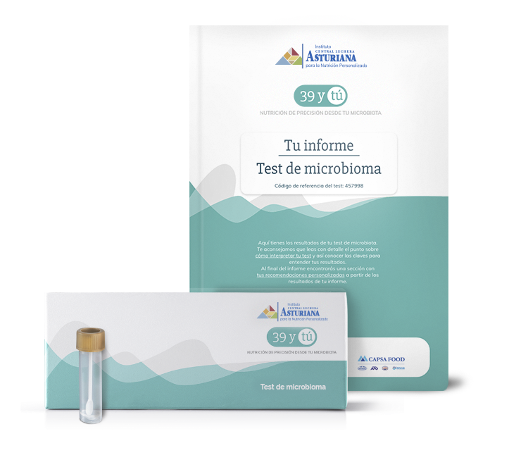

Nutrición de precisión y test de microbioma
A partir de tu test de microbioma, realizaremos un análisis basado en el ADN de los microorganismos de tu intestino y así detectar posibles alteraciones. Según los resultados obtenidos de tu test, te recomendaremos tu solución de nutrición de precisión para que puedas recuperar un buen balance de tu microbiota y hacer que te sientas mejor.
¿CÓMO CONSIGO MI PRODUCTO DE NUTRICIÓN DE PRECISIÓN?
Realiza tu test de microbioma
Este test analiza exhaustivamente la identidad y la abundancia de los microorganismos presentes en tu intestino para conocer la diversidad de bacterias que existen y detectar posibles alteraciones.
Adquiere tu producto de nutrición de precisión
Una vez realizado tu test de microbioma podremos recomendarte, en el caso que tengas alguna alteración, tu combinación personalizada de soluciones con microorganismos vivos e ingredientes bioactivos.
COLABORADORES
Cátedra
Universidad Complutense de Madrid Central Lechera Asturiana
DARWIN BIOPROSPECTING
CAPSA FOOD
Corporación Alimentaria Peñasanta, S.A
Sngular
Dejanos tu email
He leído y acepto la política de privacidad y las condiciones del tratamiento de mis datos personales.